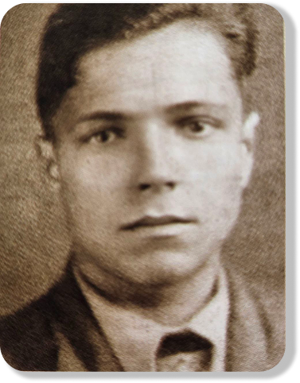
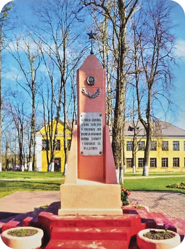
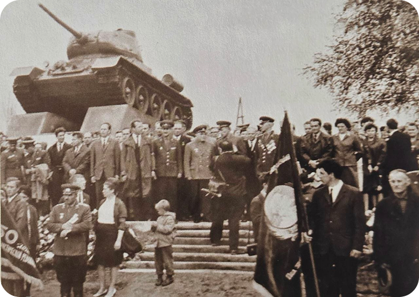
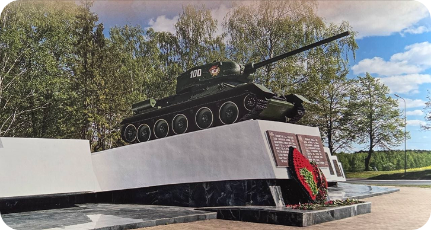
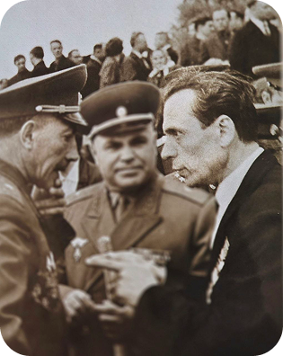
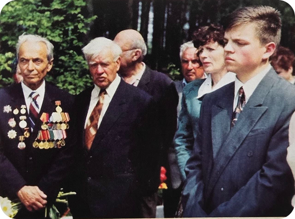
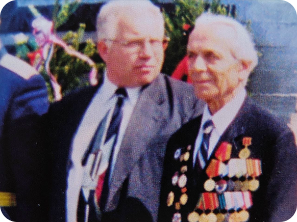

БИОГРАФИЯ И.А.БУДАЯ

Родился в 1924 году в д. Городище Щомыслицкого сельского совета Минского района. В семье было семеро детей. После окончания 9 классов поступил в Минский учительский институт, так как для поступления в военное училище не подходил по возрасту. Но через полтора месяца институт пришлось бросить.
После их окончания, когда Ивану было всего 17 лет, он начал работать в родной школе пионервожатым и учителем истории 5-х классов.
Когда началась война, юноша попросился на фронт, но его не взяли. Он видел, как на Минск упали первые бомбы. С друзьями стали собирать гранаты, патроны, оружие. Сначала был связным, а с мая 1943 года ушел в партизанскую группу особого отряда им. Калинина. В ноябре 1943-го, после ранения, попал в партизанский отряд им. Суворова, который действовал в Налибокской пуще. Затем в отряде им. Кирова стал политруком, а потом и заместителем комиссара по комсомолу.
В 1944 году, после освобождения Ивенецкого района, ему было приказано остаться и оказать помощь в организации работы РОНО (районный отдел народного образования). И.А.Будая назначили директором школы в Рубежевичах, которую до 15 августа надо было подготовить к приему учеников. Объект был сдан вовремя.
Несколько месяцев поработал в Масюковщине, а затем снова приехал проситься на фронт
После войны экстерном окончил педучилище и поступил заочно в пединститут на истфак.
Девять лет был директором родной школы, 14 лет – Острошицко-Городокской. А все остальное время, более 20 лет, работал преподавателем в Боровлянской школе, а затем в Боровлянской гимназии.
И.А.Будай – отличник народного образования, кавалер ордена Великой Отечественной войны II степени, заслуженный учитель БССР. Умер Иван Афанасьевич в мае 2012 года.
ДЕЯТЕЛЬНОСТЬ И.А.БУДАЯ
И. Н. Руссиянова возле госпиталя ветеранов Великой Отечественной войны в посёлке Лесной.




НАГРАДЫ ИВАНА АФАНАСЬЕВИЧА БУДАЯ
За участие в Великой
Отечественной войне
Орден Отечественной войны II степени; медали: “За боевые заслуги”, “Партизану Великой Отечественной войны” II степени, “За победу над Германией”, “За взятие Кенигсберга” и другие. Всего 14 наград.
За трудовую деятельность
- 1966 г. – Почетная грамота Верховного Совета БССР
- 1966 г. – орден Трудового Красного Знамени
- 1968 г. – Почетная грамота Верховного Совета БССР. Присвоено почетное звание “Заслуженный учитель БССР”
- 1969 г. – золотая медаль ВДНХ за инициативу создания мемориального памятника героям 100-й дивизии и личное участие в поисках семей, погибших в 1941 г. в Острошицком Городке

